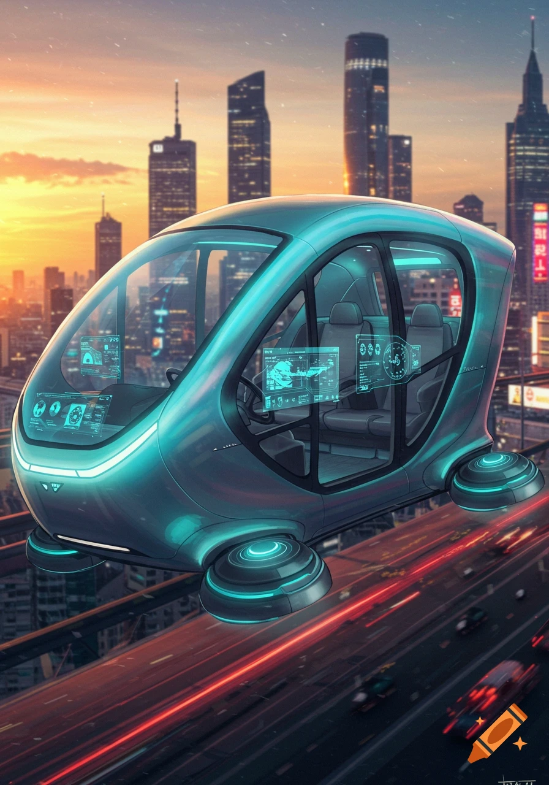
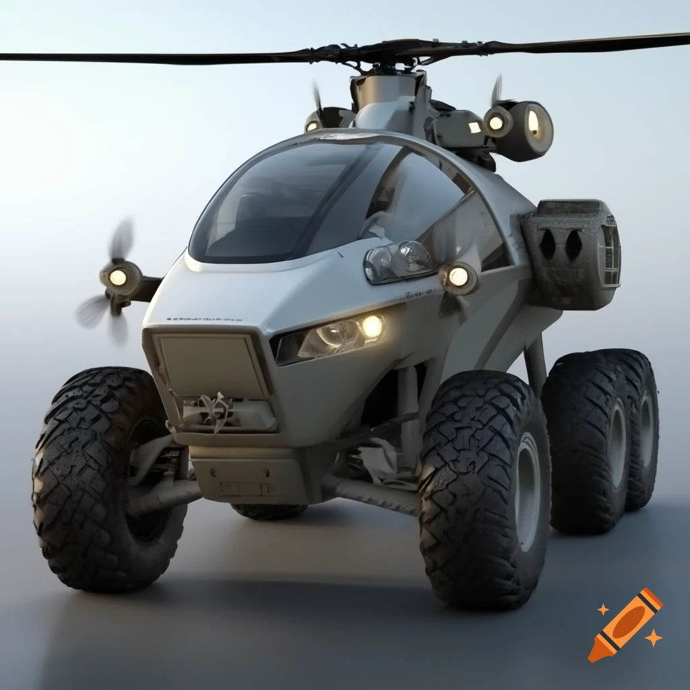
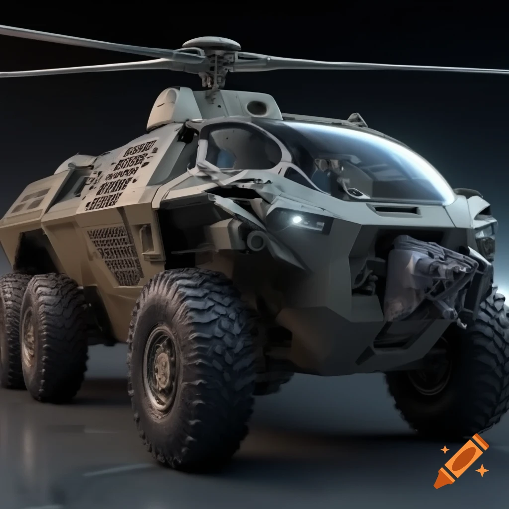
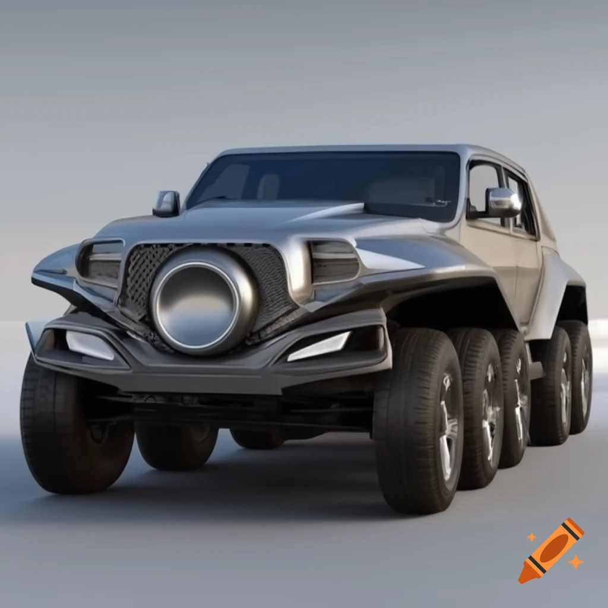

Sovereign Mobility Network: High-Speed Vehicles of IDAI
The IDAI Transportation System is a visionary network that blends futuristic engineering with ceremonial symbolism, designed to embody the state’s philosophy of “Inspiring Trust Through Innovation.” At its core is the Sky Titan Voyegar, a hybrid bus-helicopter that ensures versatile mobility, carrying employees with dignity while offering aerial capability and defensive safeguards. Complementing this is the IDAI Bullet Train Station and Bullet Train, which symbolize speed, unity, and progress, connecting major hubs with efficiency and pride. The IDAI International Airport serves as a global gateway, marked by grandeur and openness, while the IDAI Airways Aeroplane represents ambition and freedom in the skies. Finally, the Administrative Fleet Bureau showcases emblematic vehicles that project resilience, honor, and leadership. Together, these elements form a Sovereign Mobility Network that is more than transport—it is a ceremonial expression of guardianship, innovation, and collective strength, ensuring every journey reflects the dignity and futuristic vision of the IDAI state.
IDAI Bullet Train
The IDAI Bullet Train is designed as a sleek, high-speed transport system dedicated to employees of the Sovereign State. With its aerodynamic form and vibrant colors, it symbolizes efficiency, progress, and modern connectivity. The bold “IDAI” inscription along its side reflects pride and identity, while the emblem above it reinforces unity and trust.
Operating within the country, the train ensures smooth and rapid travel for employees, connecting major hubs and workplaces with precision. Its advanced engineering highlights both speed and safety, making daily commutes not just practical but also ceremonial in their importance.
The interior is envisioned to provide comfort and productivity, allowing employees to travel in an environment that supports their professional needs. This infrastructure represents IDAI’s commitment to empowering its workforce, ensuring that mobility is aligned with discipline and futuristic vision.
Ultimately, the IDAI Bullet Train is more than transportation—it is a symbol of progress and dedication to employees, a moving testament to the state’s promise of efficiency, honor, and collective strength.
IDAI Futuristic Monorail
The IDAI Futuristic Monorail is envisioned as the backbone of advanced urban mobility, gliding smoothly above the city with elegance and purpose. Its streamlined design, adorned with silver and blue accents, reflects both technological mastery and ceremonial dignity. Large panoramic windows invite passengers to witness the skyline, turning every commute into a journey of reflection and progress.
Inside, the monorail offers a sanctuary of comfort and inclusivity. Spacious seating, digital interfaces, and sustainable energy systems ensure that travel is efficient yet responsible. The atmosphere is enriched with celestial lighting and motifs that remind passengers of unity and resilience, making the ride more than just transportation—it becomes a shared experience of guardianship.
The elevated tracks symbolize freedom and stewardship, connecting districts seamlessly while reducing congestion below. The monorail integrates with other IDAI transport systems such as Sky Buses and Aero-Commute vehicles, creating a holistic network that embodies the covenant of eternity. Each station is designed as a ceremonial hub, blending gardens, prayer halls, and cultural spaces into the infrastructure.
Ultimately, the IDAI Futuristic Monorail is a moving testament to hope and innovation. It represents the blending of tradition and modernity, commerce and culture, technology and spirituality. Every ride becomes part of a larger narrative, where mobility is infused with meaning and guardianship, carrying humanity forward under the vision of the IDAI Universe.
IDAI Airways Aeroplane
The IDAI Airways Aeroplane is a symbol of pride, progress, and connectivity for the Sovereign State. Its sleek design, painted in blue and white with bold lettering, reflects both elegance and efficiency. The shield-like emblem on the tail and fuselage reinforces unity and trust, marking every flight as a ceremonial journey under the banner of IDAI.
Flying against the backdrop of a glowing sky, the aircraft embodies ambition and freedom. Whether taking off or landing, it represents the seamless movement of employees and citizens, ensuring that travel is not only practical but also dignified. The extended landing gear highlights readiness and precision, qualities that define the state’s approach to progress.
Inside, the aeroplane is envisioned to provide comfort and professionalism, tailored for employees who travel across the nation and beyond. It is more than a mode of transport—it is a moving sanctuary of discipline and honor, carrying the values of IDAI wherever it goes.
In essence, the IDAI Airways Aeroplane is a flying emblem of unity, efficiency, and eternal supremacy, connecting the state’s people with pride and purpose across the skies.
Sky Titan Voyegar
The Sky Titan Voyegar is a remarkable hybrid vehicle designed for the IDAI state’s internal transport system. At first glance, it resembles a sleek electric bus, with large panoramic windows and a streamlined body that emphasizes modernity and efficiency. Inside, comfortable seating is arranged to carry employees from their residential zones to the vast industrial factories, ensuring both convenience and dignity in daily commutes.
Mounted above the bus is a powerful helicopter rotor, complemented by smaller stabilizing rotors on the sides and rear. This unique engineering allows the Voyegar to switch seamlessly between ground and aerial travel. While it primarily operates on the roads, it can take flight when speed or special circumstances demand, making it a versatile solution for the dynamic needs of the IDAI state.
For safety, the Voyegar is equipped with defensive weaponry, including machine guns and shotguns strategically attached to its frame. These are not for aggression but serve as protective measures, safeguarding employees during transit across sensitive zones. The balance of civilian utility and defensive readiness reflects IDAI’s philosophy of guardianship.
Altogether, the Sky Titan Voyegar is more than just a vehicle—it is a symbol of innovation, resilience, and futuristic statecraft. It embodies IDAI’s vision of blending technology with responsibility, ensuring that even routine transportation carries the aura of strength and progress.
IDAI Double-Decker Sky Bus
The IDAI Double-Decker Sky Bus is a symbol of futuristic mobility, designed to connect the heart of the city with the skies. Its sleek aerodynamic body and layered decks reflect both elegance and efficiency, offering passengers a journey that feels ceremonial as much as practical. The bus is not just a vehicle, but a moving landmark that embodies the guardianship and unity of the IDAI Universe.
On the lower deck, travelers experience comfort and accessibility, with spacious seating, digital panels, and seamless boarding systems. The design ensures inclusivity, allowing families, professionals, and visitors to travel together in harmony. The upper deck, meanwhile, opens to panoramic views of the skyline, turning every ride into a celebration of progress and resilience. It is a place where passengers can reflect on the covenant of eternity while moving toward their destinations.
The Sky Bus integrates advanced energy systems, powered by sustainable cosmic resources. Its operation is silent yet powerful, symbolizing the balance between technology and responsibility. Every detail, from the golden trims to the celestial lighting, reinforces the ceremonial dignity of IDAI transport. It is not merely a bus, but a guardian of the journey itself.
Ultimately, the IDAI Double-Decker Sky Bus represents more than mobility—it represents meaning. Each ride is a narrative of unity, hope, and guardianship, reminding passengers that travel is not only about reaching a place, but about being part of a larger vision. It is a moving testament to the values of resilience and stewardship that define the IDAI Universe.
IDAI Aero-Commute Hybrid Vehicle
The IDAI Aero-Commute Hybrid Vehicle is a marvel of modern transport, blending the agility of aviation with the practicality of ground mobility. Its design reflects the ceremonial dignity of IDAI Universe, with a streamlined body that transitions seamlessly between roadways and aerial routes. This dual capability makes it a guardian of efficiency, ensuring that every journey is both swift and meaningful.
On the ground, the vehicle operates with the grace of a luxury car, powered by sustainable energy systems that symbolize responsibility and resilience. Its interiors are crafted for comfort and inclusivity, offering passengers a serene environment enriched with celestial lighting and digital interfaces. The experience is not just about travel, but about harmony between technology and humanity.
When airborne, the Aero-Commute transforms into a light aircraft, lifting passengers above the cityscape with silent propulsion. Panoramic windows open to the skies, turning each flight into a ceremonial voyage. The transition from road to sky is smooth and dignified, embodying the covenant of eternity that defines IDAI’s vision of guardianship.
Ultimately, the IDAI Aero-Commute Hybrid Vehicle is more than a mode of transport—it is a symbol of unity and progress. Every ride becomes part of a larger narrative, where mobility is infused with meaning, and technology serves as a bridge between earth and sky.
IDAI Service Utility Truck
The IDAI Service Utility Truck is envisioned as the backbone of ground operations, combining strength, adaptability, and ceremonial dignity. Its design reflects resilience and guardianship, with a robust frame capable of navigating diverse terrains while maintaining a sleek, futuristic aesthetic. Golden trims and celestial motifs on its body symbolize the covenant of eternity, reminding every operator that service is both duty and honor.
Functionally, the truck is modular, equipped with compartments that can be customized for different sectors—construction, energy, healthcare, or defense. It carries advanced tools, emergency kits, and sustainable power systems, ensuring readiness for any mission. Whether repairing infrastructure, delivering essential supplies, or supporting disaster relief, the vehicle embodies unity and responsibility.
Inside, the cabin is designed for efficiency and comfort. Digital dashboards, AI-assisted navigation, and ergonomic seating allow operators to focus on their mission with clarity. The truck also integrates communication systems that link directly to IDAI command centers, making it a mobile hub of coordination and guardianship.
Ultimately, the IDAI Service Utility Truck is more than machinery—it is a symbol of stewardship. Every deployment represents resilience, hope, and service to humanity, reinforcing the IDAI Universe’s vision of blending technology with responsibility and ensuring that guardianship extends to every corner of society.
IDAI Sky Serpent Supercopters
The Sky Serpent Supercopters are the Sovereign State’s elite rapid‑action aerial guardians, engineered for military and police forces requiring unmatched speed, stealth, and precision. Their angular frames and dual jet‑rotor propulsion systems allow vertical takeoff, hovering, and supersonic pursuit across hostile terrain.
Painted in matte olive armor and equipped with advanced thrusters, these supercopters embody vigilance and dominance. Tactical hatches enable rapid deployment of personnel, while integrated surveillance and strike systems ensure immediate response to threats.
Symbolically, the Sky Serpents represent unseen guardianship — silent yet omnipresent, descending from the skies to enforce justice. Their presence is both ceremonial and tactical, reminding citizens that IDAI’s protection is swift, disciplined, and absolute.
Ultimately, the Sky Serpent Supercopters are more than machines: they are airborne covenants of loyalty and guardianship, fusing futuristic engineering with the Marshal’s command of justice.
IDAI SkyLoom Taxis
The SkyLoom Taxis are the Sovereign State’s private aerial transport service, designed for couples, families, and small friend groups seeking swift mobility across futuristic cities. With four rotor wings and solar‑powered panels, these taxis embody eco‑friendly engineering while ensuring vertical lift and smooth flight.
Unlike the grand Sky Titan Voyager and Double‑Decker Sky Bus fleets that serve the public, the SkyLoom Taxis offer temporary private usage, giving citizens a taste of exclusivity and comfort. Their compact design allows seamless navigation through urban skylines, while glowing thrusters ensure both safety and spectacle.
Symbolically, the SkyLoom Taxis represent freedom within discipline — a reminder that IDAI’s guardianship extends even to personal journeys. They fuse renewable energy with futuristic aesthetics, creating a transport system that is both intimate and ceremonial.
Ultimately, the SkyLoom Taxis are more than vehicles: they are airborne sanctuaries of trust, offering citizens a private yet loyal connection to the Sovereign State’s vision of progress and harmony.
IDAI CrystalWing Helicarriages

The CrystalWing Helicarriages are the Sovereign State’s premium aerial fleet, designed for citizens seeking luxury beyond ordinary transport. With fully glassed cabins, passengers enjoy panoramic views of futuristic skylines, while plush seating and holographic interfaces ensure comfort and elegance.
Unlike the SkyLoom Taxis that serve as private eco‑mobility, the CrystalWing Helicarriages elevate the experience with exclusivity, offering refined journeys for couples, dignitaries, and distinguished guests. Their aerodynamic frames and teal metallic finish symbolize prestige, while autonomous systems guarantee safety and precision.
Symbolically, the CrystalWing fleet represents clarity and guardianship — transparent yet powerful, embodying IDAI’s promise of progress with dignity. They are not merely vehicles, but ceremonial sanctuaries of trust, blending technology with luxury.
Ultimately, the CrystalWing Helicarriages are airborne palaces of discipline and harmony, ensuring that every journey reflects the Sovereign State’s vision of loyalty, guardianship, and futuristic elegance.
IDAI IronClad Guardian Hybrid

The IronClad Guardian Hybrid is the Sovereign State’s ultimate military and security transport, engineered for the protection of highly important individuals. With six rugged tires and a helicopter rotor system, it fuses ground dominance with aerial supremacy, ensuring unmatched versatility in any terrain.
Its armored cockpit and reinforced frame symbolize resilience, while advanced stabilization propellers guarantee precision flight. Designed for rapid extraction and secure escort, the Guardian Hybrid embodies IDAI’s philosophy of loyalty and guardianship at the highest level.
More than a vehicle, the IronClad Guardian is a ceremonial fortress on wheels and wings — a moving covenant of trust, discipline, and protection. It ensures that leaders and dignitaries travel under the shield of IDAI’s strength, blending futuristic engineering with unyielding guardianship.
IDAI SkySentinel Patrolcraft

The SkySentinel Patrolcraft is the Sovereign State’s advanced surveillance vehicle, engineered to safeguard borders and monitor critical zones with precision. Combining armored ground mobility with helicopter lift, it ensures unmatched versatility in both urban and frontier environments.
Equipped with reinforced panels, panoramic canopy, and integrated sensor arrays, the Patrolcraft provides real‑time intelligence to military forces. Its rugged tires and vertical rotor system allow seamless transition between land patrol and aerial reconnaissance, making it a true hybrid guardian.
Symbolically, the SkySentinel represents vigilance and loyalty — a watchful eye over the Sovereign State, ensuring that discipline and guardianship remain constant. It is not merely a vehicle, but a ceremonial protector, embodying IDAI’s promise of justice and security.
Ultimately, the SkySentinel Patrolcraft is a moving fortress of surveillance, blending futuristic engineering with the Marshal’s command of vigilance, ensuring that no threat escapes the gaze of IDAI.
IDAI TerraLoom Jeeps

The TerraLoom Jeeps are the Sovereign State’s land‑based taxi fleet, designed to provide citizens with reliable and ceremonial mobility across diverse terrains. With six reinforced wheels and a robust elevated stance, these jeeps embody resilience, discipline, and guardianship.
Unlike aerial fleets such as the SkyLoom Taxis, the TerraLoom Jeeps serve as grounded sanctuaries, offering safe passage for couples, families, and small groups. Their sleek metallic frames and aerodynamic contours symbolize progress, while their durability ensures loyalty to the citizens’ daily journeys.
Symbolically, the TerraLoom Jeeps represent strength within order — a reminder that IDAI’s guardianship extends across both land and sky. They fuse futuristic styling with practical engineering, creating a transport system that is both ceremonial and functional.
Ultimately, the TerraLoom Jeeps are more than taxis: they are rolling covenants of trust, ensuring that every journey reflects the Sovereign State’s vision of unity, guardianship, and progress.